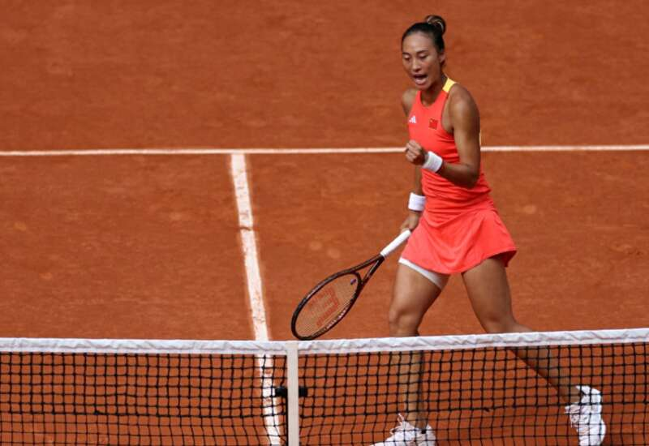
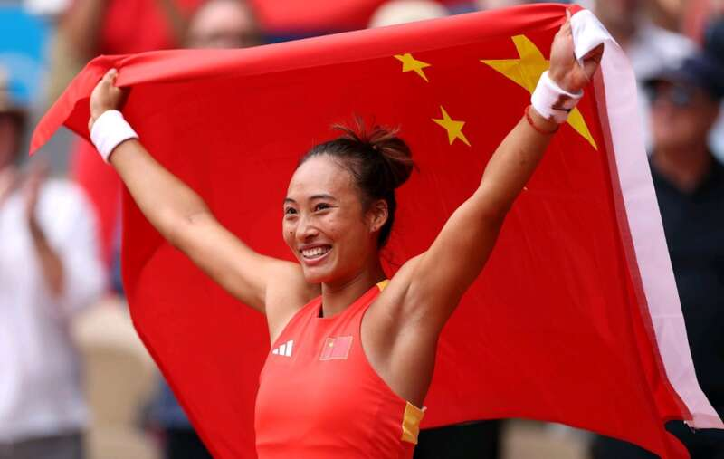
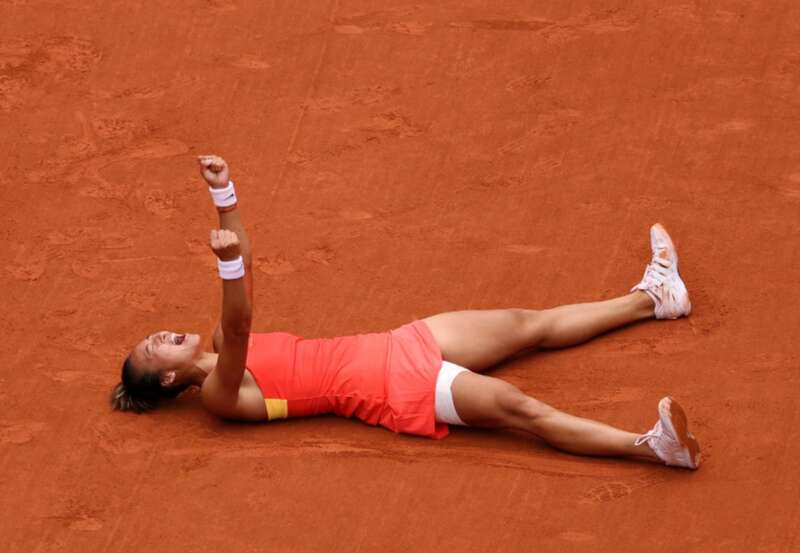

巴黎奥运会网球女单决赛结束。中国球员郑钦文顶住了对手在第二盘的反扑，直落两盘战胜维基奇夺得金牌。郑钦文的这次摘金，不仅是本届奥运会的中国队网球首金，也是中国网球历史上首枚单打金牌，更是亚洲单打首金。

之前中国网球取得的最佳战绩是04年雅典女双孙甜甜/李婷夺冠，之后的08年北京奥运，郑洁/晏紫拿到女双铜牌、李娜斩获女单第四名。此后的伦敦、里约和东京3届奥运会上，中国网球队颗粒无收。经过16年的努力，中国红终于在巴黎上空绽放。夺冠后，不仅中国球迷纷纷祝贺，就连四大满贯也通过社媒发文。
四大满贯贺词：法网：传说有一份金色的梦想，是一些民族的执念。后来某个民族的一位女儿郑钦文在菲利普·夏蒂埃，解开了它！
温网：待我羽翼丰满，我便飞往最高的山巅，拾回橄榄枝为自己加冕！恭喜郑钦文在巴黎奥运会成为首位赢得奥运单打金牌的中国球员。
澳网：命运终不再让你等待，飞鸟将榄枝为你衔来！恭喜郑钦文夺中国网球奥运单打首金，冠军拼图完成。
美网：深埋心底的冠军种子，在巴黎结出金灿灿的果实！祝贺郑钦文斩获中国奥运单打首金！

冠军含金量：网球是职业化程度较高的一项运动，4大满贯是所有网球人所追逐的目标，故而就有部分球迷质疑郑钦文奥运夺冠的含金量，认为她又和澳网一样属于捡漏。但从对阵对手以及比赛过程来看，郑钦文这个冠军含金量十足。虽说首轮对手一换再换，可后四轮的对手都非等闲之辈，且首轮两个双蛋也追平了奥运纪录。
后四轮中，郑钦文先是击败11号种子纳瓦罗，接着又和前世界第一、三个大满贯冠军科贝尔苦战3盘才过关，然后又爆冷击败世界第一、4个大满贯得主斯瓦泰克，最后击败了13号种子、温网四强之一的维基奇。相比于澳网，这次的对手实力更强，不乏大满贯得主。其实能够在半决赛战胜斯瓦泰克，终结她的红土连胜就已经证明了实力。

夺冠后的影响：郑钦文夺冠之后，她的商业价值会再度提高。当其成为亚洲一姐且澳网闯入决赛后，她的已经排入了福布斯财富榜的前15名。如今郑钦文虽然没有大满贯冠军在手，但靠着“中国网球女单首枚金牌”这个荣誉，也能够再度提升自己的商业价值。
此外，这枚金牌是目前女子项目里分量最重的一枚，打破了欧美人长期的垄断，所以她有望成为中国队闭幕式的扛旗者之一。相信通过这次奥运会的历练，郑钦文的网球技战术和心态会更上一层楼，我们有理由相信，未来她拿大满贯冠军真的不是梦！
Advertisements